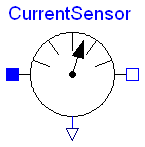
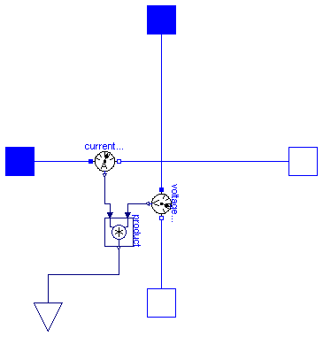

This package contains potential, voltage, and current sensors.
| Name | Description |
|---|---|
| Sensor to measure the potential | |
| Sensor to measure the voltage between two pins | |
| Sensor to measure the current in a branch | |
| Sensor to measure the power |
 Modelica.Electrical.Analog.Sensors.PotentialSensor
Modelica.Electrical.Analog.Sensors.PotentialSensor

| Type | Name | Description |
|---|---|---|
| PositivePin | p | pin to be measured |
| output RealOutput | phi | Absolute voltage potential as output signal |
model PotentialSensor "Sensor to measure the potential"
extends Modelica.Icons.RotationalSensor;
Interfaces.PositivePin p "pin to be measured";
Modelica.Blocks.Interfaces.RealOutput phi(
redeclare type SignalType = SI.ElectricPotential)
"Absolute voltage potential as output signal";
equation
p.i = 0;
phi = p.v;
end PotentialSensor;
 Modelica.Electrical.Analog.Sensors.VoltageSensor
Modelica.Electrical.Analog.Sensors.VoltageSensor

| Type | Name | Description |
|---|---|---|
| PositivePin | p | positive pin |
| NegativePin | n | negative pin |
| output RealOutput | v | Voltage between pin p and n (= p.v - n.v) as output signal |
model VoltageSensor "Sensor to measure the voltage between two pins"
extends Modelica.Icons.RotationalSensor;
Interfaces.PositivePin p "positive pin";
Interfaces.NegativePin n "negative pin";
Modelica.Blocks.Interfaces.RealOutput v(
redeclare type SignalType = SI.Voltage)
"Voltage between pin p and n (= p.v - n.v) as output signal";
equation
p.i = 0;
n.i = 0;
v = p.v - n.v;
end VoltageSensor;
 Modelica.Electrical.Analog.Sensors.CurrentSensor
Modelica.Electrical.Analog.Sensors.CurrentSensor
| Type | Name | Description |
|---|---|---|
| PositivePin | p | positive pin |
| NegativePin | n | negative pin |
| output RealOutput | i | current in the branch from p to n as output signal |
model CurrentSensor "Sensor to measure the current in a branch"
extends Modelica.Icons.RotationalSensor;
Interfaces.PositivePin p "positive pin";
Interfaces.NegativePin n "negative pin";
Modelica.Blocks.Interfaces.RealOutput i(
redeclare type SignalType = SI.Current)
"current in the branch from p to n as output signal";
equation
p.v = n.v;
p.i = i;
n.i = -i;
end CurrentSensor;

This power sensor measures instantaneous electrical power of a singlephase system and has a separated voltage and current path. The pins of the voltage path are pv and nv, the pins of the current path are pc and nc. The internal resistance of the current path is zero, the internal resistance of the voltage path is infinite.
| Type | Name | Description |
|---|---|---|
| PositivePin | pc | Positive pin, current path |
| NegativePin | nc | Negative pin, current path |
| PositivePin | pv | Positive pin, voltage path |
| NegativePin | nv | Negative pin, voltage path |
| output RealOutput | power |
model PowerSensor "Sensor to measure the power"
Modelica.Electrical.Analog.Interfaces.PositivePin pc
"Positive pin, current path";
Modelica.Electrical.Analog.Interfaces.NegativePin nc
"Negative pin, current path";
Modelica.Electrical.Analog.Interfaces.PositivePin pv
"Positive pin, voltage path";
Modelica.Electrical.Analog.Interfaces.NegativePin nv
"Negative pin, voltage path";
Modelica.Blocks.Interfaces.RealOutput power(redeclare type SignalType =
Modelica.SIunits.Power);
Modelica.Electrical.Analog.Sensors.VoltageSensor voltageSensor;
Modelica.Electrical.Analog.Sensors.CurrentSensor currentSensor;
Modelica.Blocks.Math.Product product;
equation
connect(pv, voltageSensor.p);
connect(voltageSensor.n, nv);
connect(pc, currentSensor.p);
connect(currentSensor.n, nc);
connect(currentSensor.i, product.u2);
connect(voltageSensor.v, product.u1);
connect(product.y, power);
end PowerSensor;